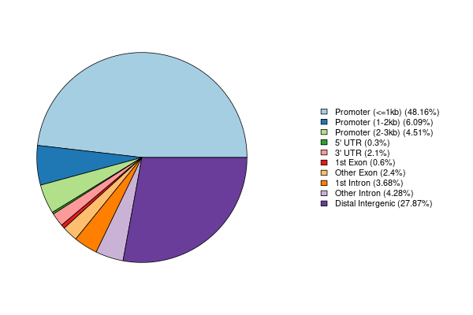
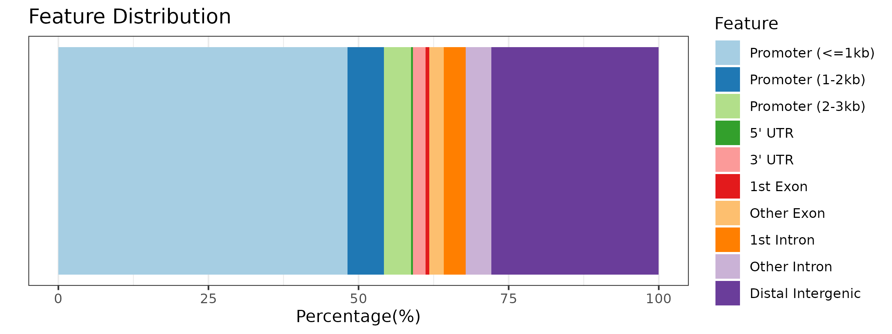
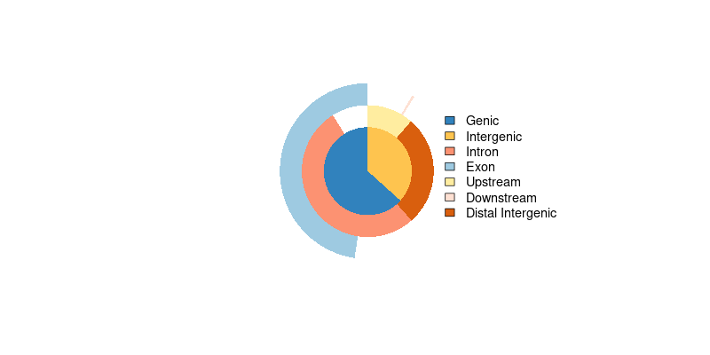
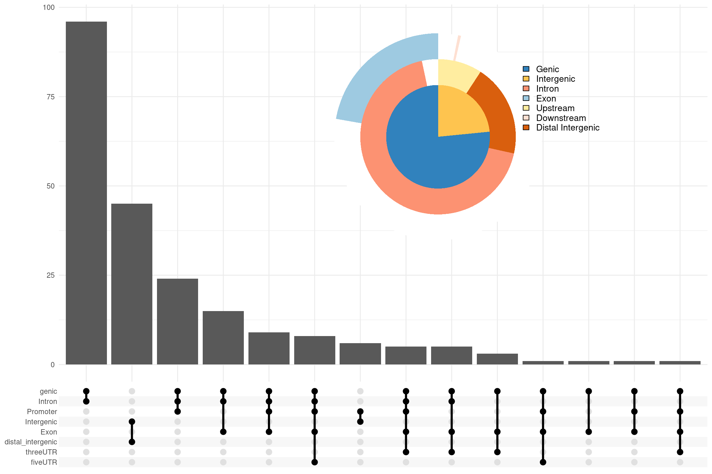
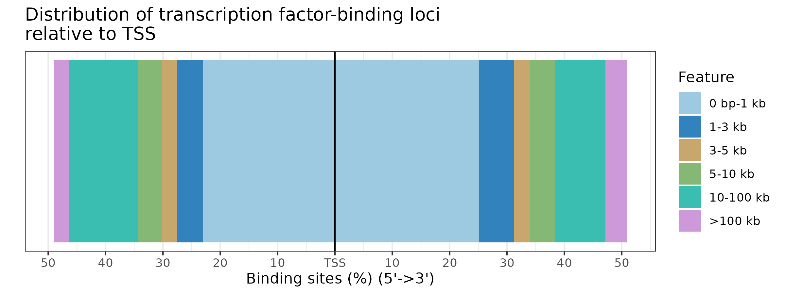

library(epiSeeker)
library(org.Hs.eg.db)
library(TxDb.Hsapiens.UCSC.hg38.knownGene)
txdb <- TxDb.Hsapiens.UCSC.hg38.knownGene
data(peakAnno)
peakAnno <- annotateSeq(files[[4]], tssRegion=c(-3000, 3000),
TxDb=txdb, annoDb="org.Hs.eg.db")4 Peak Annotation
Note that it would also be possible to use Ensembl-based EnsDb annotation databases created by the ensembldb package for the peak annotations by providing it with the TxDb parameter. Since UCSC-style chromosome names are used we have to change the style of the chromosome names from Ensembl to UCSC in the example below.
library(EnsDb.Hsapiens.v75)
edb <- EnsDb.Hsapiens.v75
seqlevelsStyle(edb) <- "UCSC"
peakAnno.edb <- annotateSeq(files[[4]], tssRegion=c(-3000, 3000),
TxDb=edb, annoDb="org.Hs.eg.db")Peak Annotation is performed by annotateSeq. User can define TSS (transcription start site) region, by default TSS is defined from -3kb to +3kb. The output of annotateSeq is csAnno instance. ChIPseeker provides as.GRanges to convert csAnno to GRanges instance, and as.data.frame to convert csAnno to data.frame which can be exported to file by write.table.
TxDb object contained transcript-related features of a particular genome. Bioconductor provides several package that containing TxDb object of model organisms with multiple commonly used genome version, for instance TxDb.Hsapiens.UCSC.hg38.knownGene, TxDb.Hsapiens.UCSC.hg19.knownGene for human genome hg38 and hg19, TxDb.Mmusculus.UCSC.mm10.knownGene and TxDb.Mmusculus.UCSC.mm9.knownGene for mouse genome mm10 and mm9, etc. User can also prepare their own TxDb object by retrieving information from UCSC Genome Bioinformatics and BioMart data resources by R function makeTxDbFromBiomart and makeTxDbFromUCSC. TxDb object should be passed for peak annotation.
All the peak information contained in peakfile will be retained in the output of annotateSeq. The position and strand information of nearest genes are reported. The distance from peak to the TSS of its nearest gene is also reported. The genomic region of the peak is reported in annotation column. Since some annotation may overlap, ChIPseeker adopted the following priority in genomic annotation.
- Promoter
- 5’ UTR
- 3’ UTR
- Exon
- Intron
- Downstream
- Intergenic
Downstream is defined as the downstream of gene end.
ChIPseeker also provides parameter genomicAnnotationPriority for user to prioritize this hierachy.
annotateSeq report detail information when the annotation is Exon or Intron, for instance “Exon (uc002sbe.3/9736, exon 69 of 80)”, means that the peak is overlap with an Exon of transcript uc002sbe.3, and the corresponding Entrez gene ID is 9736 (Transcripts that belong to the same gene ID may differ in splice events), and this overlaped exon is the 69th exon of the 80 exons that this transcript uc002sbe.3 prossess.
Parameter annoDb is optional, if provided, extra columns including SYMBOL, GENENAME, ENSEMBL/ENTREZID will be added. The geneId column in annotation output will be consistent with the geneID in TxDb. If it is ENTREZID, ENSEMBL will be added if annoDb is provided, while if it is ENSEMBL ID, ENTREZID will be added.
4.1 Visualize Genomic Annotation
To annotate the location of a given peak in terms of genomic features, annotateSeq assigns peaks to genomic annotation in “annotation” column of the output, which includes whether a peak is in the TSS, Exon, 5’ UTR, 3’ UTR, Intronic or Intergenic. Many researchers are very interesting in these annotations. TSS region can be defined by user and annotateSeq output in details of which exon/intron of which genes as illustrated in previous section.
Pie and Bar plot are supported to visualize the genomic annotation. ::: {.cell hash=‘03-Anno_cache/html/plotAnnoPie_21f1b130e80c1007245f8c08df03d0be’}
plotAnnoPie(peakAnno):::

plotAnnoBar(peakAnno)
Since some annotation overlap, user may interested to view the full annotation with their overlap, which can be partially resolved by vennpie function.
vennpie(peakAnno)
We extend UpSetR to view full annotation overlap. User can user upsetplot function.
upsetplot(peakAnno, vennpie=TRUE)
4.2 Visualize distribution of TF-binding loci relative to TSS
The distance from the peak (binding site) to the TSS of the nearest gene is calculated by annotateSeq and reported in the output. We provide plotDistToTSS to calculate the percentage of binding sites upstream and downstream from the TSS of the nearest genes, and visualize the distribution.
plotDistToTSS(peakAnno,
title="Distribution of transcription factor-binding loci\nrelative to TSS")